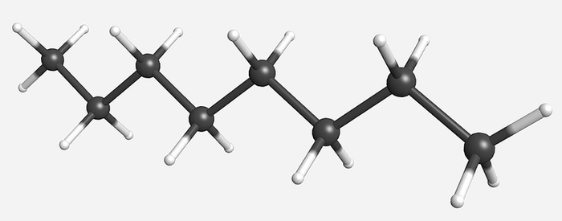

Hợp chất mạch hở

Image source: Topic 1 image sources
| Vietnamese | Hợp chất mạch hở / Mạch hở |
|---|---|
| English | Open-chain compound |
| Pronunciation | /ˌəʊ.pən ˈtʃeɪn ˈkɒm.paʊnd/ |
| Word type | Danh từ (Noun) |
Meaning (Vietnamese)
Hợp chất có các nguyên tử cacbon liên kết thành mạch không khép kín.
Meaning (English)
an organic compound whose carbon atoms form a chain rather than a ring.
Example
Most alkanes are open-chain compounds.
Hầu hết các ankan là hợp chất mạch hở.
Another definition from the notes
Structural arrangements of carbon atoms.
Source of information: Topic 1 notes (see Sources)